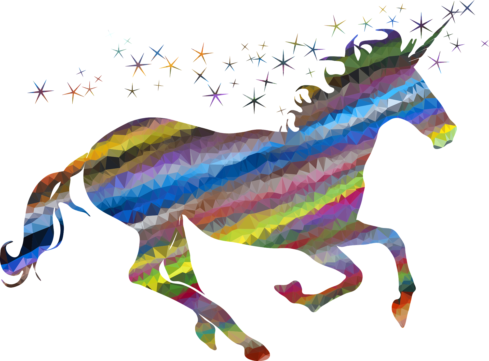

Unicorns in Modern Times
How are unicorns used and perceived today?
Unicorns today are not considered to be real creatures, but they are still a common sight. They appear in shows, art, toys, and even have foods themed after them.
Unicorns are often used as sigh of uniqueness and individuality. They are often associated with rainbows and sparkles. Unicorns are also often considered to be
girlish, with most marketing of unicorns being directed at younger girls. Unicorns today are less about purity and healing and more about expressing oneself and
positivity. Unicorns, much like other mythical creatures, are also a way for people to expand their imaginations and experiment with the fantastical.
Unicorns in Modern Media
How are unicorns portrayed in modern media?
Unicorns are most often portrayed in media as majestic, magical creatures. A lot of unicorns appear in media aimed at younger girls. Barbie, a fashion doll and
fictional character icon, has often been portrayed with unicorns. The My Little Pony series, a media franchise aimed at girls also features unicorn characters.
Furthermore, unicorns are also associated with princesses in general and will often appear as companions to princess characters in media. Unicorns are not often
the protagonists or main characters of their stories. This could be because unicorns in the past have been seen as otherworldly, untouchable, and pure. As a result,
people may not feel like they can relate to them as much.

Interesting Info About Unicorns
Unicorn horns have sometimes been considered to have healing powers. Unicorns are often mistaken for alicorns and pegasuses. Alicorns are creatures with both
a unicorn horn and wings and pegasuses are winged horses. Unicorns are often depicted with blue, purple, or silver eyes. Unicorns have also been traditionally
portrayed as white, although in modern times unicorns have been depicted in many different colors. Unicorn horns have also traditionally been depicted as white, but
this has been changing in modern times as well. Unicorns are also mentioned in the Bible, a religious text for Christians. For more information on what a unicorn is
and an overview of dragons in different cultures, click the button below.
Basics
Want to Learn Even More?
For more information on unicorns and popular unicorn media, check out these websites!

Similarities and Differences Between Unicorns and Dragons
An obvious similarity with dragons and unicorns is that they are both mythical creatures. However, both dragons and unicorns have been considered to be beings
of great power. Body parts of both unicorns and dragons are considered to be valuable. Additionally, both dragons and unicorns appear in fairytales. Despite this,
the creatures themselves are not all that similar. Dragons often have wings or are serpent-like - unicorns are often depicted as horse-like and do not have wings.
Dragons can have the ability to breathe fire, whereas unicorns cannot. Furthermore, dragons are often associated with the air, and unicorns are often associated
with land. For more information on dragons, click the button below.
Dragons